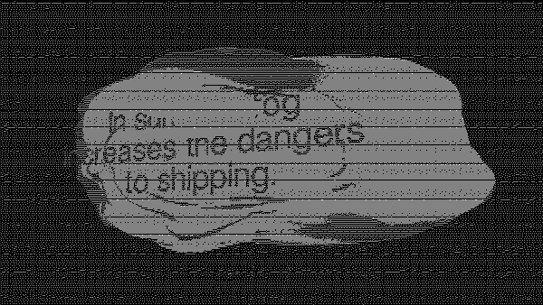

Act 1: The Fog of War
Descriptive Text
NOTE: If you are trying to view the live scene and ended up here instead, this is because your screen size is indicative of a device using touch controls and this project only works with mouse/track-pad and keyboard. If this redirect happened in error and you do have a mouse/track-pad and keyboard, you can access the scene HERE.
You can also tap HERE to send yourself a link to the project for later viewing.
Act 1 starts the viewer in a 3D space that is dark gray space with the camera focused on a light gray fog form. The viewer is able to orbit the camera around the fog using the mouse and pan around the scene using a click and drag gesture. The dark gray space of the scene churns and roils much like the fog object focal point. As the viewer watches, texts continually emerge from the fog before submerging again. The texts are drawn from archival documents about fog and its relationship to the military, science, and commerce. The dark gray background also contains a black spherical matrix of lines and grayscale graph images.
The scene also contains a simple soundscape consisting of “brown” noise meant to loosely mimic the ocean. This noise is punctuated by intermittent deep tones which are inspired by land-based fog horns that signal at set intervals during periods of heavy fog.
The entire scene, while three dimensional, is rendered in very small ASCII characters. White characters of varying type on a black background generate the optical grayscale experienced by the viewer.
A demo video of this act can be viewed HERE.